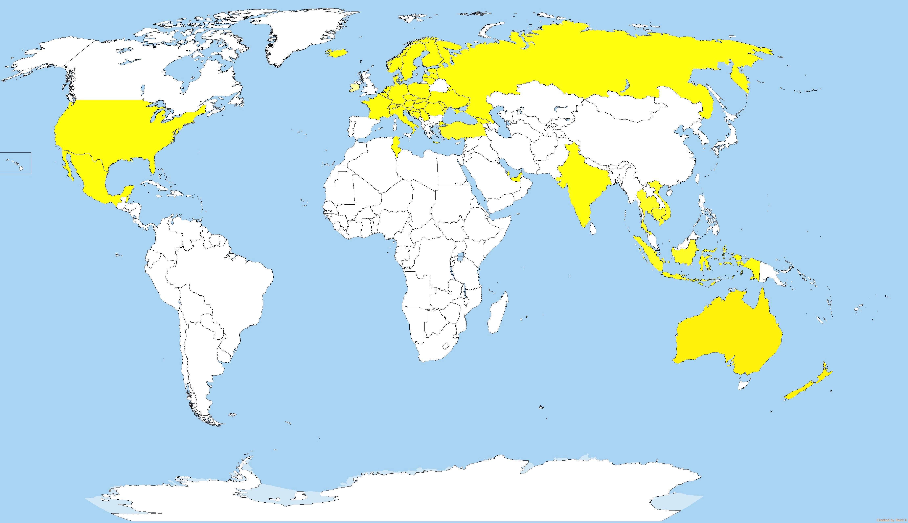

Tällä sivustolla pääset tutustumaan matkailuun minun näkökulmastani.
Sivustolla tekemiäni reissuja kuvin ja tarinoin. Jaan sivustolla myöskin itse
tärkeiksi kokemiani vinkkejä ja linkkejä matkusteluun liittyen. Tarkoitus on
antaa sinulle ajatuksia eri matkakohteista sekä reissujen
toteuttamistavoista.
Voit lukea minusta lisää valitsemalla yläpalkista Matkailija.
Eri reissukohteeni löydät yläpalkista nimellä Matkat.
Mikäli olet kiinostunut matkailuvinkeistä, valitse Vinkit.
Turvallista matkaa!
Matkusteluni kartalla:
